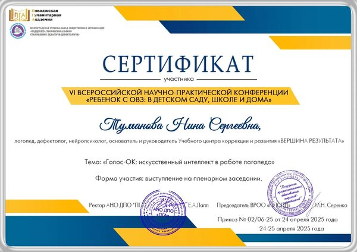

JPG · оригинал документа
«Голос-ОК»: искусственный интеллект в работе логопеда
Туманова Нина Сергеевна · 24–25 апреля 2025 года · выступление на пленарном заседании VI Всероссийской научно-практической конференции «Ребёнок с ОВЗ: в детском саду, школе и дома»